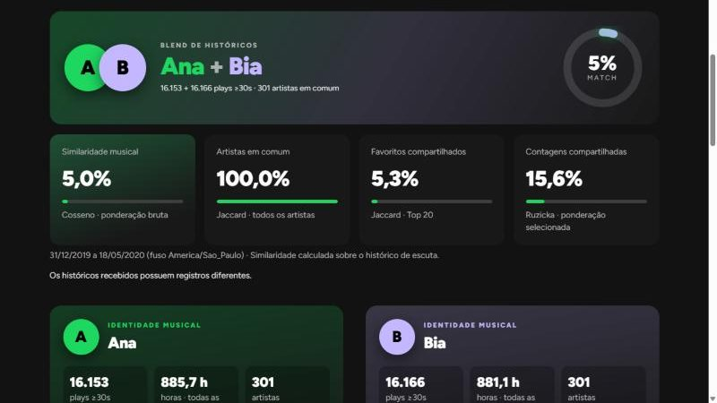
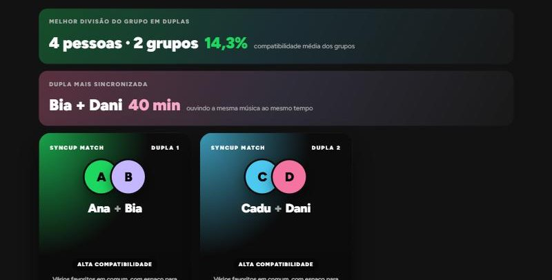
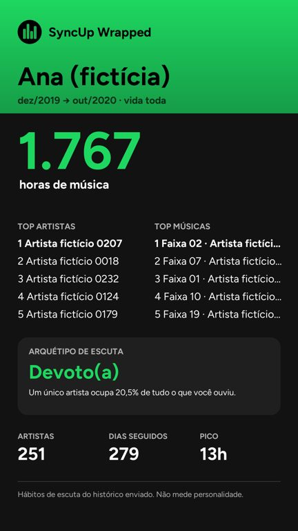

Dupla
Duas pessoas lado a lado: blend, identidade musical, rankings e os momentos em que vocês ouviram a mesma música ao mesmo tempo.

Compare o seu histórico do Spotify com o dos amigos. Tudo roda no seu computador.
237 testes passando · licença MIT
Fontes aceitas
Sem conta, sem servidor e sem anúncios.
Duas pessoas lado a lado: blend, identidade musical, rankings e os momentos em que vocês ouviram a mesma música ao mesmo tempo.

Junte a galera. O SyncUp compara todos com todos, forma as duplas que mais combinam e mostra a dupla mais sincronizada.

A sua vida inteira no Spotify, em stories prontos para postar.

De 3 a 6 pessoas numa matriz de compatibilidade, com os perfis e os arquétipos de cada um.
Em Conta → Privacidade, marque "Histórico estendido de streaming". O ZIP chega por e-mail.
No Windows, dois cliques no iniciar.bat. Não precisa extrair o arquivo.
Blend, duplas, Wrapped e stories em PNG 1080×1920, prontos para o Instagram.
Os históricos enviados, os perfis salvos e o cache. Dá para ver e apagar tudo no próprio app.
O ListenBrainz, quando você digita um usuário, e o MusicBrainz, se marcar a caixa de estilo.
O token do Spotify, o seu IP e o modelo do aparelho.